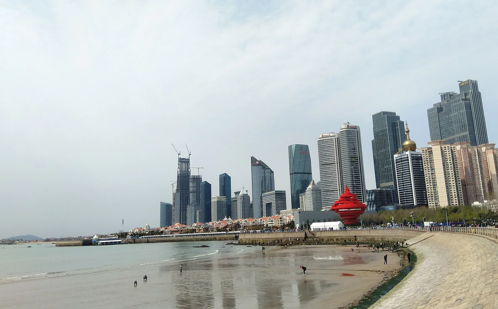

SUGGESTED JOURNEY / 6天
泉城、泰山与儒家古建
- DAY 01
济南山东博物馆与泉水街区。
- DAY 02
趵突泉、大明湖慢行，下午转泰安。
- DAY 03
先岱庙后泰山山脚或短线，按体力住宿。
- DAY 04
泰山主线或继续山道，下山充分休息。
- DAY 05
转曲阜，看孔庙、孔府。
- DAY 06
孔林或邹城孟庙二选一，留返程交通。
THE DESTINATION GUIDE / 华东
齐鲁·泰山·黄海海岸
山东有人文与海滨两条强线：济南、泰安、曲阜适合理解齐鲁与儒家传统，青岛烟台威海适合海岸漫游，潍坊淄博有工艺和地方饮食。

山东可以从三种地形读起：鲁中山地连接济南、泰山和齐鲁文化，胶东半岛面向港口、海防与海岛，鲁西北及西南平原则以黄河、运河和农业市镇为线索。曲阜、邹城的礼制建筑与青岛、烟台的近代街区属于不同历史阅读。原有合并条目仍保留潍坊淄博、临沂枣庄等，但行程须按城市分日；东西跨度大，一次七天适合一条子线。
先把齐鲁诸侯、儒家礼制与泰山祭祀建立联系，再看运河商贸、黄河水利和近代港口。风筝、年画、琉璃等工艺应读制作与使用场景，不能只看文创商品；海防纪念场馆与海滨休闲也需要不同的观看和表达方式。
春秋人文游，6—9月海滨；冬季海风强。
7—10天。适合一次主题子线；完整走遍需分次安排。
济南、青岛等航空铁路门户可分线进出，半岛城市之间铁路便利，海岛、泰山和黄河口仍需接驳。鲁西平原各市不宜按高速公路地图直距估时，冬季海风、雨雾与船运变化留缓冲，离岛日别紧接最后一班跨省交通。
济南老城外围、曲阜古城外和青岛轨交沿线便于文化游；泰山山脚适合早出，山上住宿则服务特定登山线。烟台威海按实际海岸片区选住，黄河口与鲁西县域以县城为补给，不为海景房增加每天长距离往返。
02 / A JOURNEY, NOT A CHECKLIST
路线为独立主题子线，不建议机械合并。到达日与离开日需按实际交通另留余量。
济南山东博物馆与泉水街区。
趵突泉、大明湖慢行，下午转泰安。
先岱庙后泰山山脚或短线，按体力住宿。
泰山主线或继续山道，下山充分休息。
转曲阜，看孔庙、孔府。
孔林或邹城孟庙二选一，留返程交通。
青岛老城与海岸步行。
八大关与啤酒工业展示。
崂山一条山海线，晚上休息。
转烟台，看烟台山与老港周边。
蓬莱阁专程半日，晚间住烟台或蓬莱。
转威海，市区岸线轻量步行。
刘公岛纪念主题，留船运和离开余量；长岛另加两天。
03 / THE CITY NOTEBOOK
每站展开后可看景点细节、地方味道、行程和实用安排。也可以一口气展开，按自己的节奏读。
共 14 个城市与片区
济南的泉水不是孤立景点，而是与地下水、街巷、湖泊和居民日常相连的城市系统。趵突泉看泉涌，大明湖看汇水与公共空间，老城则能观察泉渠怎样穿过生活。省博物馆补上齐鲁考古背景，文学名人的记忆也应放回具体时代，不把不同朝代混成一个“泉城故事”。
时长为游览建议，未含全部转场。
先看主泉池与周边泉眼，再读水位、地质和保护说明；泉涌强弱随水文变化，不保证每次都呈同样状态。亭台与泉池的视线关系值得慢看。
选一段湖岸和百花洲等开放街巷，看泉渠、院落与湖面怎样联系。避开只在商业主街停留，支路更能说明水与居民生活的关系。
以山东古代文明和专题文物为主，按史前、商周等年代看器物与地方社会。博物馆收集全省材料，出土地、用途与年代比单记珍贵等级更重要。
认识风味与吃法，再选择餐馆。
螺旋层次的面点烤出外酥内软，葱香明显，现吃小份最适合，配清汤或茶水可减油腻感。
通常是咸味的粥食，谷物与菜、豆等形成浓稠口感，名称不代表甜，先尝原味再添调料。
肥瘦猪肉酱烧至软，汤汁浓、适合配饭；一块份量已足，可搭青菜，不必整桌连续点重酱菜。
第一天上午省博物馆，午后休息再到老城吃饭；第二天从趵突泉走泉水街巷到大明湖，择一段湖岸慢行。千佛山可另加半天，章丘城子崖等考古主题则留整天，不在看泉后临时追赶郊外。泉水线尽量步行，感受水渠的连续关系。
泰安因泰山而形成丰富的礼制与山岳文化，但山上的碑刻、寺观、石阶并非同一时代建成。岱庙能先解释祭祀与国家礼制，登山则把身体经验同地形联系起来。夜爬只是当代游览方式之一，白天看古建、题刻和山势往往更有内容；日出云海都不能保证。
时长为游览建议，未含全部转场。
沿中轴看殿堂、院落与古树碑刻，先读祭祀制度与修建沿革。大殿、配殿和石碑各有年代，不把皇家祭祀建筑一概归入远古封禅。
从牌坊、庙宇、石阶与沿途碑刻读朝山传统，按体力决定走多高。不要为拍完每处题字消耗全部体力，登山与下山均留休息。
在正式开放路线看南天门、岱顶等地形和刻石，留意不同时期的文字与山岳意义。高处风大，观日出不必站悬崖或攀越护栏。
认识风味与吃法，再选择餐馆。
薄饼有谷物香，卷熟菜、豆腐等食用，口感从柔软到干韧各异，配汤更容易入口。
豆腐可清炖、炸烧或配时蔬，重点看不同火候带来的口感，不需一餐点齐全部菜式。
当季果实果香明显、口感依品种成熟度变化；非产季不追求产地名号，携带鲜果注意防压。
第一天先岱庙，再到山脚看线路与准备轻装，夜间充分睡眠；第二天白天登山，按体力选步行与合法接驳组合，需要可住山上；第三天下山后休息再离开。两日短游就缩短山道，别在长时间登山后立刻开车或赶往曲阜密集看古建。
济宁既有曲阜、邹城的儒家文化，也有运河与湖区城市史。孔庙、孔府、孔林分别对应祭祀、衍圣公家族生活与墓地，不能当作同一处院落；邹城孟庙又是另一套人物与礼制线索。先理解空间用途和历代修建，再读碑刻与家族制度，儒家传统便不只是课本上的几句名言。
时长为游览建议，未含全部转场。
先看祭祀建筑轴线、门坊和碑刻，再进入孔府看家族治理与生活空间。两处用途不同，建筑多历经扩建，孔子生活年代不等于眼前建筑年代。
从墓域、神道与碑刻理解长期延续的家族墓地，慢走一条主线即可；保持安静，不将墓地当普通郊野公园，人物身份以碑记和正式说明为准。
看亚圣祭祀与孟氏家族空间，比较同曲阜建筑的共性与差异。邹城和曲阜需交通转场，建议另一天，先读孟子思想背景再看殿宇匾额。
认识风味与吃法，再选择餐馆。
肉与豆制品等在甏中炖煮，酱香浓厚配米饭，份量较足，先少量点配菜，搭清爽蔬菜更合适。
肉汤、谷物与胡椒等形成浓稠汤食，各地版本不同，热吃慢喝，可配饼作早餐，辣味先确认。
相关宴席菜式常强调摆盘和寓意，点餐先看具体食材和份量，不以菜名故事认定都来自古代原方。
首日曲阜孔庙、孔府，下午不再挤远点；第二天孔林和曲阜地方展陈，傍晚休息；第三天转邹城看孟庙孟府。若想了解济宁运河、南旺枢纽或微山湖，应另留一至两天，不把地级市名下所有方向都压进“三孔一日游”。
青岛的近代港城历史可从街道、坡地与公共建筑读起，工业酿造和海滨休闲又增加不同层次。八大关的住宅不全属于同一国家或同一时期，崂山也不只是“海上仙山”标签，而有花岗岩地貌、道教与村落生活。把老城、工业和山海分日看，避免在漫长海岸上连续赶点。
时长为游览建议，未含全部转场。
从栈桥看港湾和铁路方向，再走坡地街巷，观察近代建筑与地形。历史建筑内部多有特定用途，外观可看不代表全部开放，按标识选择展馆。
沿林荫道路看退界、院墙、屋顶与海岸的关系，选一两处明确开放建筑。不同风格不能简单等同国籍，民居与办公空间不随意进入。
按太清、巨峰等具体片区选一条线，看花岗岩峰体、海岸或道观。各片区入口与路线不同，不用一个总称安排半日全游，登山后留休息。
认识风味与吃法，再选择餐馆。
鱼肉馅鲜嫩，常配韭菜等，饺子较大，先问份量；吃前放凉，鱼肉馅仍不能完全排除细刺。
清蒸、白灼便于比较鱼虾贝鲜味，点明重量和加工方式，选择充分熟制，不自行食用赶海拾得生物。
青岛可见海鲜或肉馅锅贴，煎底香脆，上部柔软，热汁烫口，适合配清汤和蔬菜，先少量尝。
第一天老城、栈桥和一处历史展馆，傍晚沿海一段慢走；第二天八大关，午后啤酒博物馆等工业主题；第三天崂山单独一天。黄岛、即墨或远端海岸再加日程，不因沿海长线地图相连就每天从头步行到尾。
烟台山与老港反映近代开埠和城市建设，蓬莱阁联系海防、港口与仙山文学，长岛则需要岛屿生态与渔业视角。传说中的仙境与历史建筑并非同一层证据，海市现象也不可能按日程保证。三片之间有陆路与船运，慢看港城之后再选海岛，会比天天追逐不同日落点从容。
时长为游览建议，未含全部转场。
从山坡、近代建筑和海面关系读港城历史，选开放展馆看具体用途和年代。建筑风格不直接等同使用者国籍，登高后可接老港公共街区。
结合阁、城与海防相关展示读沿海防御和地方纪念，文学与神仙传说另作文化线索。现存建筑历经维修，不能用传说年代给眼前构件断代。
选南北长山岛的一条合法开放海岸线，看崖岸、海蚀地貌与渔村。岛屿活动依船运和天气调整，生态保护区与普通海边不是一回事。
认识风味与吃法，再选择餐馆。
细面配鱼汤等卤汁，鲜味柔和，小碗适合作早餐；配料因店而异，先尝汤再加辣醋。
海肠等熟制后配米饭，脆嫩与酱汁相融，食材和价格应问清，海鲜过敏者先了解原料。
面条配多样卤汁，讲究面质与鲜汤，份量可大，先选一款浇头而非连续点多碗比较。
第一天烟台山与老港街区，第二天专程蓬莱阁及附近正式展示，住蓬莱；第三天按船运入长岛，选择一片海岸，第四天继续轻量线路后离岛。若只有两天就只走烟台与蓬莱，海岛不作为傍晚临时往返的附加项目。
威海的海岸休闲与近代海军史距离很近，但观看方式应不同。刘公岛让北洋海军和甲午战争有具体建筑与人物背景，成山头显示半岛海岸位置，海草房则回应渔村材料与气候。把纪念、自然与村落分别看，才能避免沉重历史只成海景照片的注脚。
时长为游览建议，未含全部转场。
以甲午战争相关博物与遗存为重点，先读舰队、人物和战争背景，再走岛上建筑。船运与岛内步行都需时间，纪念空间不匆忙掠过，拍摄遵循馆方安排。
位于荣成方向，在正式开放步道看岬角、岩岸与海面，理解海岸位置和航海线索。远海视野受雾和风影响，不翻护栏寻找更靠海的机位。
在荣成选择公开接待的村落，观察厚屋顶、石墙与院落如何适应海风。保护展示、民宿改造和仍居住的房屋分清，入院与拍摄先询问。
认识风味与吃法，再选择餐馆。
鱼肉馅细嫩，常配韭菜等增香，个头较大，先问一份数量，热食小口咬，留意可能的细刺。
海鱼、贝类清蒸或炖煮各有味道，点单看计价单位和加工方式，饮食选择以正规供应为准。
发面加蛋等烙成，外皮微香、内部柔软，甜味较温和，适合作点心，包装携带看保质条件。
第一天到威海走市区公共岸线，轻量适应海风；第二天刘公岛留整天，傍晚休息；第三天转荣成看海草房与一段海岸；第四天成山头或其他开放岬角后离开。两天短游就保留市区与刘公岛，别把海岸全线网红点当连续步行。
潍坊的风筝、杨家埠年画与青州古城各有工艺和历史来源，淄博则连着齐文化、陶瓷琉璃和周村商业。两市相邻但不是一个城区，不能用一顿烧烤把所有文化串成同日打卡。先看博物展陈，再进工艺或商贸街区，能辨认传统使用、当代制作与旅游商品之间的区别。
时长为游览建议，未含全部转场。
看风筝骨架、糊纸、绘画与飞行结构，比较不同形制和用途。传说中的起源与可见实物年代分开，买文创之前先理解材料和扎制。
青州市属潍坊，古城看街巷与宗教文化，博物馆重点读龙兴寺造像等考古背景。出土地、埋藏与修复过程比只比较佛像面容更有意义。
位于淄博，看商铺、会馆和街道尺度，理解近代商业分工与商帮网络。保存建筑、修复店面和今天的经营需分辨，陶瓷或齐文化另留专题时间。
认识风味与吃法，再选择餐馆。
以热汤、肉杂等与薄饼搭配，卷食和喝汤形成地方吃法，配料先问清，不吃内脏可提前说明。
薄饼撒芝麻烤成酥脆片，咬开有麦香和芝麻香，适合作零食，携带防潮防压，甜咸款先分清。
烤肉常配小饼、葱和蘸料卷食，自己继续加热时注意熟度，少量多样点单，比一次上满更好掌握份量。
第一天潍坊风筝馆与城区工艺主题，第二天青州博物馆加古城并住当地；第三天转淄博看周村，晚间尝烧烤；第四天临淄齐文化或陶瓷琉璃专题二选一。只有两天就在潍坊和淄博中择一，不让跨城交通挤掉馆内阅读。
临沂的汉简考古、沂蒙山地与革命历史，枣庄的运河和煤炭工业，是两套相互邻接却不同的旅行主题。银雀山汉简提供文本流传的实物证据，台儿庄则兼有运河城市记忆和后期重建街区。理解历史时先问材料保存在哪里、建筑何时修建，再看今天怎样展示。
时长为游览建议，未含全部转场。
重点看竹简出土背景、保存修复与兵书文本，区分实物、复制件和释读内容。地下文献怎样改变对古书的认识，比只记“发现名著”更有价值。
从蒙山等正式开放片区择一，看山体、森林与村庄关系；自然登山与革命纪念地不是同一入口，按主题和体力安排，雨后不走野路。
位于枣庄，以运河水系、街巷格局和历史展陈为重点，明确现今大量街区经过重建。抗战史应读专门纪念展陈，不用夜游商业氛围代替战争记忆。
认识风味与吃法，再选择餐馆。
肉汤配谷物、胡椒等熬成稠汤，热食香浓，搭饼作早餐即可，先尝咸辣再添调味。
鸡块与辣椒快炒或煸烧，辣香浓、适合下饭，带骨部位慢吃，点单先问辣度与份量。
薄饼夹蔬菜、蛋等在鏊上加热，外香内软，现做热吃最清楚层次，配料可按口味减少。
第一天临沂博物与银雀山汉简，下午城内轻量行程；第二天沂蒙山选一片并住附近，第三天转枣庄休息或看工业专题；第四天台儿庄，住一晚或次日离开。纪念主题可替换山岳，别把整片沂蒙与台儿庄按同一天两座公园安排。
东营的现代城市发展与石油工业紧密相连，向海则进入黄河三角洲的新生湿地；广饶又保存更早的地方文化与建筑。旅行可以把河流造陆、鸟类迁徙和工业城市分别看，不把“河海交汇”当作每天都清楚可见的一道色线。保护区的生态价值也不等于游客可自由进入每片滩涂。
时长为游览建议，未含全部转场。
沿合法开放栈道和观鸟点看芦苇、柽柳与潮间带，先读湿地形成和候鸟迁徙，再观察现场。水色交界受水沙、潮汐和天气影响，不保证固定画面。
位于广饶，结合地方文物与历史建筑认识黄河三角洲之外的长时段文化。先核对馆址与展览，将广饶县域内容同现代东营主城区分。
在市区沿湖步道慢行，看现代城市绿地、水面与道路布局，适合抵达日调整节奏。人工营建的城市湖景与黄河口自然湿地不混为同类生态环境。
认识风味与吃法，再选择餐馆。
包子经煎蒸形成金黄底壳、上部柔软，肉菜馅各有味道，现出锅汁热，先咬小口。
卤制后切片，肉质紧实、香料味浓，适合作小盘配饼；熟食储存条件和来源先确认。
肉馅手工成丸后汆煮等，口感细嫩鲜香，清汤便于尝原味，汤热慢喝，不必配过多同类肉菜。
首日东营主城轻量看城市公共空间，第二天黄河口生态旅游区留整天，按天气与观鸟条件调整；第三天向广饶看历史博物馆与地方街巷后离开。两天短游就保留主城和河口，不在湿地观鸟清晨后再跨县赶全部古建。
滨州可从黄河平原、市镇商业与家族建筑读起。惠民魏氏庄园呈现晚清民居的防御和经营背景，杜受田故居连接士人家族与教育，市博物馆则补足区域历史。孙子文化在地方有多种纪念展示，故里叙事存在文献与地方解释层次，不宜把主题景区直接当春秋原址。
时长为游览建议，未含全部转场。
从区域考古、黄河与地方民俗建立地图，再去县域看建筑会更清楚。展品出土地和使用情境值得细读，关注工业、纺织或民间工艺怎样进入本地生活。
位于惠民魏集，看厚墙、院落、门道和防御设施怎样组织家族空间。将晚清社会、商业积累与建筑联系，不用传奇故事替代房屋实际结构与年代。
位于滨城区滨北方向，以院落、家训及人物展陈读家族教育和清代仕宦传统。故居保护修缮与历史生活区分，细看门厅和内部空间比只记帝师称号更有用。
认识风味与吃法，再选择餐馆。
薄饼卷熟菜肉等后再煎，外香内软、层次丰富，一份较饱，可多人分食，先问馅料和份量。
糖与芝麻形成甜香酥松口感，适合小块配茶，携带注意防潮，点心不必因旅游一次买太多。
当季鲜枣脆甜，成熟度与储存影响口感，秋季更适合比较鲜果；反季商品不以产地标签代替品质判断。
第一天市博物馆和城市公共空间，午后杜受田故居，住滨城；第二天专程惠民魏氏庄园，视时间在魏集镇看生活街区。孙子主题可另加一天，无棣古城和海岸再开北向支线，不把滨州全市当一个可步行的古城。
德州的历史可从运河通道与区域交往展开：商贸、粮运和往来人群塑造城镇，苏禄国东王墓则见证明代跨海交往和运河旅程。现代城市又有铁路、工业与新区面貌。比起只尝一只扒鸡，博物馆、墓园与河岸能把这座鲁西北交通城市读出更长的时间。
时长为游览建议，未含全部转场。
按地方历史、运河与民俗专题建立框架，注意不同县区材料与交通线路的联系。旧地名和今天行政范围可能不同，出土地先在地图上定位。
从碑刻、墓园与相关展陈了解明代苏禄使团来华、东王在德州病逝及后世纪念。地方守墓传统有丰富层次，具体人物和年代按正式说明阅读。
选明确开放的一段步道，看河道、桥梁与老城方向，配合历史地图想象水运功能。今天改造的景观与历史设施分开，不能见古式栏杆便认作古迹。
认识风味与吃法，再选择餐馆。
整鸡先加工再卤焖，肉质酥嫩、香料味柔和，切块分享更便于品尝；真空包装与现制保存条件不同。
宁津保店地方熟食以卤香和紧实肉质见长，切片配饼或面食，先问份量，熟食注意冷藏条件。
羊肠等经充分处理与煮制入汤，口感与香味有特点，不吃内脏可选择普通肉汤，点单先了解原料。
第一天上午市博物馆，午后苏禄国东王墓，傍晚运河开放岸线慢行，晚餐尝扒鸡。第二天可继续老城与一项县域主题；若去宁津、乐陵或夏津乡村，应选一个方向留整天，不为多吃几样名产在鲁西北各县反复转车。
聊城的东昌湖环抱古城，运河又把它接入南北贸易网络，光岳楼与山陕会馆分别回应城建和商帮生活。今天古城街区有不少修复与重建，不能把全部仿古立面都当明清遗存。临清的运河商贸和高唐的饮食工艺另有县域中心，第一次旅行围绕湖、城、会馆更容易读清结构。
时长为游览建议，未含全部转场。
先从楼周街道看四向空间，再阅读木结构与修建说明；登楼按实际开放安排，古城商业街景和珍贵古建分别判断，不以统一仿古外观推断年代。
沿戏楼、殿堂与院落看商帮祭祀、交往和演戏如何共用空间，细读砖木石雕题材。它与运河的位置关系，比单独记哪位名人来过更能解释建筑功能。
从河道、工程、船运与城市关系建立背景，再回到东昌湖和古城更好理解。博物展示覆盖区域宽，年代与路线变化不能只用今日地图代替。
认识风味与吃法，再选择餐馆。
薄面皮包肉或蛋等馅后煎烙，外脆内软，一份较饱，切段分享，热馅和油汁先放凉。
豆腐脑类汤食搭卤汁等，滑嫩咸鲜，做法不同于整块老豆腐，先尝原味再添辣椒。
薄皮包肉等馅蒸制，形制与江南糯米烧卖不同，肉鲜和面皮韧劲是重点，数量先问清再点。
首日上午运河文化博物馆，午后山陕会馆，傍晚湖岸慢走；第二天光岳楼与古城支巷，再选一段东昌湖开放步道。临清商贸遗存另留一天，高唐也应单列方向，别把县域小吃都变成需要跨县寻店的硬任务。
菏泽的牡丹不只是春季观花，它还连接育种、花卉种植、工笔画与地方产业；曹州文化、戏曲和鲁西南市镇则提供全年可读的背景。郓城文学主题、巨野古建与单县羊汤属于不同县域。旅行先选一条线，别将《水浒》故事中的人物活动直接当作每处景区的考古事实。
时长为游览建议，未含全部转场。
花期看不同品种的花型、色泽与栽培，非花期则降低观花预期，关注园林和相关展示。盛花随温度、降雨变化，不把往年照片当固定日期。
从地方考古、曹州历史和民俗工艺认识春花之外的城市，关注黄河平原生活与区域交流。器物用途和出土地相互对应，避免只记“牡丹之都”标签。
在巨野看砖塔形制与周边历史说明，再选县博物或公开工笔牡丹画展示。古塔并不保证可登，传统题材与当代画业应分别理解。
认识风味与吃法，再选择餐馆。
羊骨与羊肉熬汤，汤香浓而热，配饼可作正餐；肉与内脏部位点单先说，先尝原汤再加辣。
面皮包肉馅后折叠煎烙，外酥内软、份量厚实，适合切块分享，热馅油汁小口食用。
经腌煮等形成咸香紧实口感，切片配饼或作冷盘，具体做法依店家，购买熟食看来源与保存条件。
首日菏泽市区博物馆与街巷，花期再留半天至曹州牡丹园；第二天选巨野古建与工笔画一线。郓城、单县和曹县不要当天全收，若想看文学主题或吃羊汤，可另加一天并住当地。非花期把重心转到博物、戏曲与县域生活。
日照的海滨新城之外，莒县保留更长的区域历史和文化线索。海岸看潮、沙滩与港城生活，莒州博物馆把考古材料放回时间线，浮来山则连接古树、寺院和文学传统。东夷小镇等仿古商业项目是当代旅游空间，不能直接当东夷时期的城市遗址，海滨与内陆宜分日。
时长为游览建议，未含全部转场。
选开放沙滩或公共步道慢行，看沙湾、海浪与城市岸线；亲水遵守浴场当日管理，不把平静水面当无风险信号，非游泳季也适合看海岸地形。
位于莒县，以区域考古与莒文化相关材料为线索，留意陶器符号等解释的证据边界。古代文化范围与今日行政区不同，年代和出土地先读清楚。
位于莒县，沿开放山道看定林寺、古树与碑刻，结合刘勰相关文化展示阅读。树龄、人物轶事与传说依可靠说明理解，不能用夸张称号代替观察。
认识风味与吃法，再选择餐馆。
近海鱼虾贝以清蒸、炖煮等做法尝鲜，点单核对计价和加工费，不自行食用赶海拾得生物。
杂粮薄饼有谷物香、口感偏韧，可卷熟菜或豆腐，配汤更易入口，购买时问清现做或包装款。
鱼肉馅软嫩，常配韭菜等，个头与份量先问，慢吃留意细刺，海鲜过敏者先确认配料。
第一天日照海岸选万平口及一段步道，午后休息，傍晚可到东夷小镇了解当代商业；第二天转莒县看莒州博物馆，住县城；第三天浮来山半日后离开。只有两天就在海滨与莒县中决定主次，别把看海、登山和跨县返程全排满。
没有匹配的城市或关键词，换一个词再试。
省内东西跨度大；泰山夜爬并非必选，体能不足可白天慢走。
正文的参观时长不等于开放时段。博物馆预约、山地天气、交通末班和港澳台或边境通行要求，均应以实际出发时间的官方信息确认。
链接包含内容参考及行前查询入口，不能将其中任一来源视为全部正文的逐句依据。历史与风味为原创编辑概述，时长和路线为规划建议。